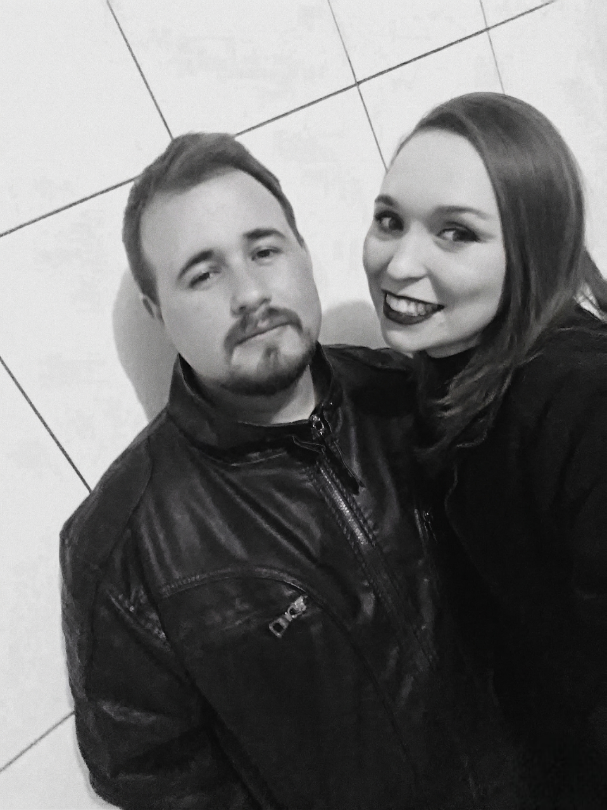
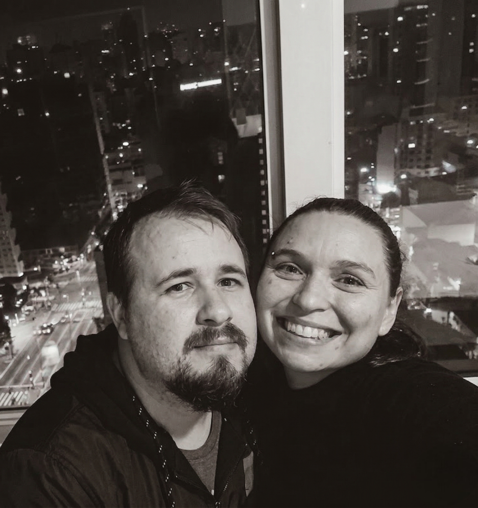
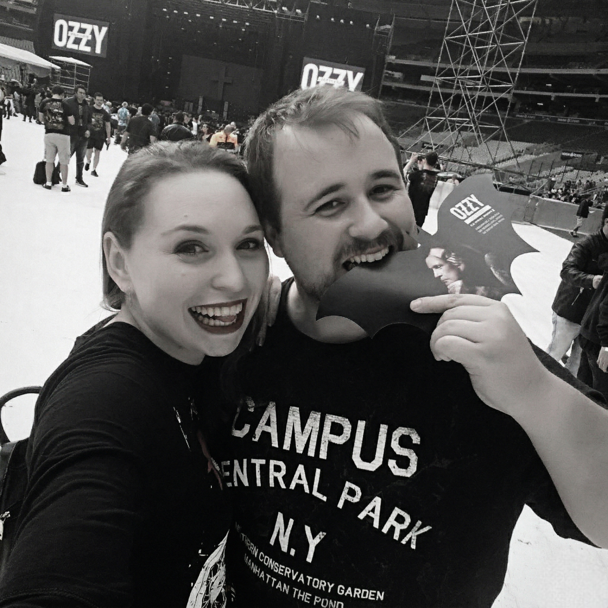
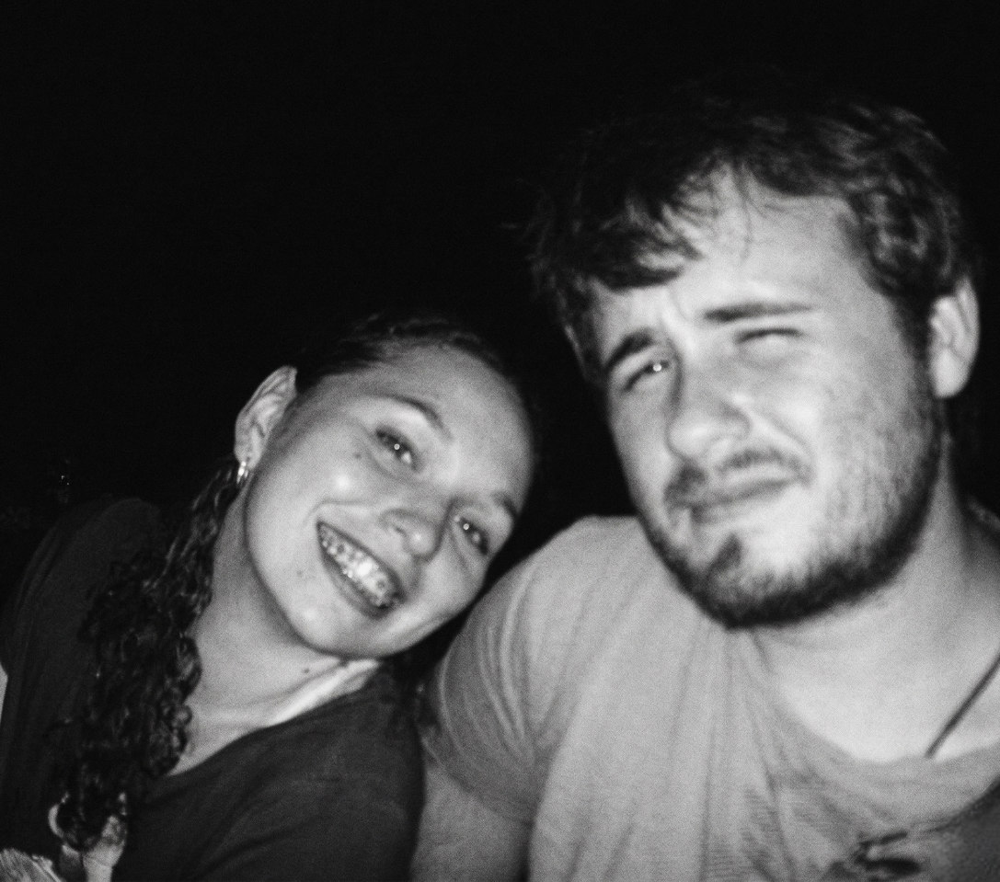

O casal que cuida
A casa deles também é feita de patinhas, ronrons e afeto. Cuidar dos gatos nunca foi um detalhe, mas parte da forma como vivem: com paciência, carinho e atenção às pequenas vidas que dividem o lar.
Vinte anos de parceria, sonhos compartilhados, gatinhos cuidados com amor, uma casa construída juntos, faculdade concluída, profissão consolidada e uma vontade bonita de seguir colecionando memórias. Esta página é um convite para conhecer um pouco da história do casal — e, para quem desejar, contribuir com os próximos capítulos.

Nem toda grande história acontece de uma vez. Algumas são feitas de rotina, cuidado, estudo, trabalho, música, viagens sonhadas e presença. André e Bruna são esse tipo de casal: daqueles que fazem planos, riem junto, enfrentam fases e seguem escolhendo um ao outro.
A casa deles também é feita de patinhas, ronrons e afeto. Cuidar dos gatos nunca foi um detalhe, mas parte da forma como vivem: com paciência, carinho e atenção às pequenas vidas que dividem o lar.
Entre provas, desafios e rotina puxada, o casal concluiu a faculdade e consolidou caminhos profissionais. Ele, analista de sistemas, transforma lógica em solução. Ela, nutricionista, cuida de pessoas com ciência, escuta e acolhimento.
Já construíram uma casa, viveram etapas importantes e seguem sonhando alto. Querem viajar mais, viver shows juntos, guardar memórias em fotos lindas e celebrar com um brunch especial ao lado da família e dos amigos.
Eles já viajaram, querem viajar ainda mais e têm aquela alegria de quem sabe que experiências compartilhadas valem ouro. Entre as memórias que embalam a relação, está também a vontade de viver mais shows, mais estrada e mais histórias para contar — com direito a Coldplay na trilha do coração.



Cada fase preparou a próxima. E o casamento nasce justamente desse acúmulo bonito de experiências vividas em conjunto.
André e Bruna começaram a construir uma história marcada por companheirismo, humor, conversa e uma afinidade rara.
Vieram os estudos, a correria e a persistência. Eles seguiram juntos até a conclusão da faculdade, fortalecendo o apoio mútuo em cada etapa.
Ele se firmou como analista de sistemas. Ela, como nutricionista. Duas trajetórias diferentes, mas conectadas pelo mesmo impulso de crescer e fazer a vida acontecer.
Construíram um lar. Um espaço que representa estabilidade, carinho, cotidiano e tudo aquilo que só se ergue com tempo e parceria.
Chega o momento de celebrar com fotos lindas, roupa incrível, brunch com família e amigos e um futuro cheio de viagens, música, descanso merecido e experiências especiais.
Em vez de uma lista tradicional, a proposta aqui é ajudar o casal em experiências e etapas do casamento. Agora os botões abrem uma modal dinâmica com QR Code, chave Pix, e-mail ou galeria, conforme a ação escolhida.
Porque celebrar uma história tão longa também merece beleza, presença e um visual à altura do momento.
Um momento leve, elegante e aconchegante para reunir quem faz parte da história do casal.
Para registrar sorrisos, abraços, detalhes e tudo aquilo que só a fotografia consegue guardar com delicadeza.
Uma ajuda para os próximos quilômetros, novos cenários e a alegria de continuar explorando o mundo juntos.
Cada gesto pode virar lembrança, conforto, experiência e beleza nesse novo capítulo. Aqui, o presente não é só material: ele participa do sonho.